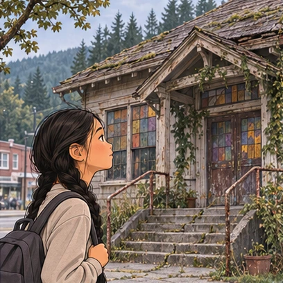
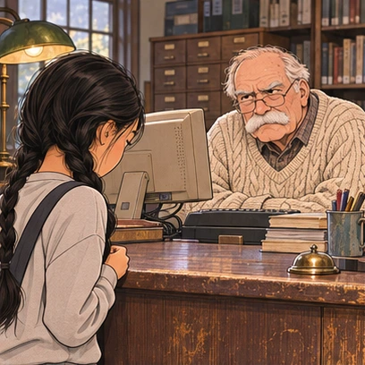

Part 47
The steps leading up to the library are lined with cracks, the windows are tinted, and the roof sags, just a little, like it’s tired. It’s hard to imagine this is the same gingerbread library I was afraid of as a kid. All that magic has faded.

When I reach the doors, I tug once, then again, and just when I’m wondering whether it’s locked, the building finally lets me in. Inside, it smells like mildew, but it’s warm.
An older man, sitting at the front desk, looks up from an ancient computer. Thin wire-framed glasses perch on his nose, and a thick white mustache twitches between his pink cheeks. If he weren’t frowning so hard, he might look a little like Santa Claus.
“May I help you?” he asks, in a way that says he doesn’t really want to help me. He crosses his arms over his chest, wrinkling his cable-knit sweater.

So, no evil witch, but a grumpy Santa is pretty close.
“Um, that’s okay,” I tell him. “I’m just looking.”
He stares at me, and I’m not sure what to do. For a second, I wonder if I’m not allowed in the library. But that’s ridiculous. It’s a library.
“You have a card?” he asks.
I’m not sure what he means at first. “Oh, right. A library card. Um . . . no.”
I step up to the desk, even though he kind of scares me. His bushy eyebrows knit together, and he seems to be waiting for something, but I’m not sure what he needs.
“I’m Lily,” I tell him. “Lily Reeves? My hal—my grandma lives across the street. I just moved in with her.”